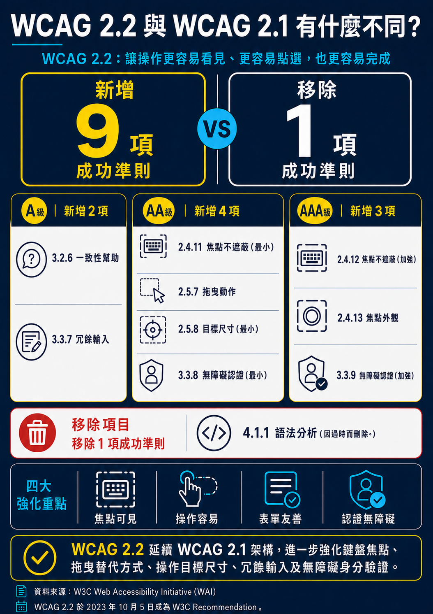

複雜圖片：圖片替代說明採下載方式

類似的範例
相應稽核評量碼
移至待檢測元件檢測方式
檢測項目：純資訊輪播或跑馬燈
-
確認輪播/跑馬燈組件是否會動，若不會動則進入(5)。
-
若輪播／跑馬燈組件具有自動播放或自動移動效果，則：
- 應確認組件中提供暫停按鈕（或刪除/隱藏按鈕，下同，統稱為「暫停/中止/隱藏元件」）。
- 該暫停/中止/隱藏元件應為整個輪播/跑馬燈組件中第一個可聚焦元件。
-
若第一個可聚焦元件為整個輪播/跑馬燈組件本身，則暫停/中止/隱藏元件可作為第二個可聚焦元件，並確認可用鍵盤操作暫停/中止/隱藏功能且行為相符。
-
若輪播組件提供暫停機制，則以下須擇一達成：
- 類型一：同時提供暫停、播放按鈕，須確認兩者均可操作。
- 類型二：僅提供暫停按鈕，確認該按鈕具切換功能，可進行暫停及播放。
-
以滑鼠確認各輪播圖/跑馬燈是否具有功能（例如連結）。
-
確認具有功能後，以 Tab 鍵遊走組件各元件，焦點跳位順序應符合邏輯。
-
確認各元件可操作（需在無法達成類型一的前提下方可採用類型二）：
-
類型一（Tab 可走入各「項目」）：
- 焦點遊走至某項目時，被選中之項目應可視。
- 應主動報讀該項目內容；若為連結，應可用 Enter/空白鍵啟動。
-
類型二（Tab 無法走入各「項目」，但可走到控制元件）：
-
A 方式（向前/向後按鈕）：
- 焦點停留於切換按鈕時，應報讀其名稱（如向前/向後/上一張/下一張）。
- 按下切換按鈕後，被選中之項目應可視。
- 螢幕報讀器應主動報讀對應的圖片資訊（或回饋按鈕已按下）。
- Tab 可繼續遊走至對應之唯一項目，且可鍵盤啟動其功能（如連結）。
-
B 方式（指示標籤）：
- 焦點停留於指示標籤時，應朗讀項目值或名稱（如項目一/項目二）。
- 被選取的項目需清楚可見。
- 被選取時應主動朗讀相應提示（如已按下/已選取）。
- 使用者可透過 Tab 將焦點移動到該唯一項目；若為連結可用 Enter/空白鍵啟動。
-
A 方式（向前/向後按鈕）：
-
類型一（Tab 可走入各「項目」）：
-
承(7)，確認鍵盤可操作（類型一或類型二，此處不考量報讀）。
-
（若採類型一）當焦點停於某項目時，該項目會暫停，且焦點指示器清楚可見。
-
再次按 Tab，焦點可移動並選取下一項。
-
焦點取到各可聚焦元素時，在不同瀏覽器均呈現預設焦點樣式或作者設定的明確可見樣式。
-
焦點指示器至少有 1 CSS 像素圍繞元素，且聚焦/未聚焦對比變化達 3:1；若對比不足，指示器邊線厚度至少 2 CSS 像素。
-
確認名稱/角色/行為相符：
- 輪播圖片為圖片角色。
- 暫停鍵、向前/向後鍵為按鈕角色。
- 具連結功能之項目為連結角色。
- （類型二 A）按下向左/向右鍵後應主動報讀對應圖片資訊（或回饋已按下）。
- （類型二 B）指示標籤被選取後應主動報讀相應提示（如已按下/已選取）。
-
以 Tab 與 Shift+Tab 遊走整組組件，最終可順利離開該組件。
-
以上均符合則全數通過。
註一：若第一個鍵盤焦點是整組輪播，並且能報讀整組件為輪播，則暫停/中止/隱藏等機制可以為第二個焦點。
註一（白話）：有些實作會用一個大標籤包裹整個輪播（或在前方放說明標籤）並讓其可聚焦與報讀「輪播圖」，因此暫停/隱藏等按鈕就會成為第二個可聚焦元件。